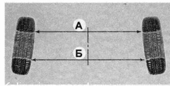

Углы установки передних колес проверкаДля обеспечения правильного качения колес автомобиля с учетом работы подвески и рулевого управления элементы передней подвески должны быть установлены в определенном положении. Проверять и регулировать углы установки передних колес рекомендуется в специализированных технических центрах, располагающих соответствующим оборудованием. Углы установки передних колес указаны в разделе «Справочные данные» Угол развала передних колес — это угол наклона плоскости вращения колеса относительно вертикали. Неравномерность углов развала передних колес вызывает увод автомобиля в сторону при прямолинейном движении. Большой положительный развал (когда верхняя часть колеса выступает наружу) приводит к ускоренному износу наружной части протектора шины, а большой отрицательный развал — внутренней части протектора . Угол развала переднего колеса регулируется верхним болтом крепления поворотного кулака к стойке. Болт имеет эксцентриковую головку, а также специальную шайбу. Схождение передних колес — это угол между плоскостью вращения колеса и продольной плоскостью симметрии автомобиля в положении прямолинейного движения. Схождение определяется как разность расстояний между ободьями передних колес в миллиметрах (Б — А, см. рис). Нарушение схождения передних колес ухудшает управляемость и курсовую устойчивость автомобиля и приводит к интенсивному износу шин.- Схождение передних колес регулируют изменением длины рулевых тяг, путем вращения резьбовых вставок. Продольный наклон оси поворота — это угол между осью поворота переднего колеса и вертикалью в плоскости, параллельной осевой линии автомобиля. Нарушение правильного угла наклона оси поворота передних колес вызывает ухудшение управляемости автомобиля. При большом угле продольного наклона увеличивается сопротивление вращению рулевого колеса, а при малом угле — ухудшается стабилизация передних колес в направлении движения прямо. Наклон оси поворота колеса регулируют изменением количества шайб, установленных на концах продольной растяжки передней подвески. |